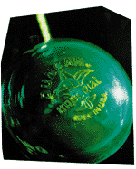
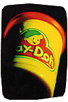

To the toy connoisseur, the choice of toy is nearly as personal and
important
as one's life work or spouse. Thousands of dollars and hundreds of
hours are spent on these playthings. How do people meet and fall in
love with "their" toys?
Rich's favorite pastime with LEGO is piecing together sets and
scenarios that LEGO doesn't officially make, such as an intricate
chessboard. She finds that her cohorts on the Net egg her on. "It's
really fun when people see [the creations], and they write to you and
say, ÎOh, I really like the way you used that piece,' and they actually
know that piece pretty well," she laughs. "It's neat, because a
lot of people in the physical world around me have no clue why I do
this, or don't know anything about LEGO, or aren't really interested,
but on the Internet, you're apt to bump into somebody with the same
weirdo interest as you."
The hobby has long felt
the schism between those who collect for love and those who do it
for money. "Unfortunately, now, we're seeing an invasion of people
who are really into speculating," Myers says. "The popular term for
them is Îscalpers.'" Scalpers make it their business to buy up hot or
short-packed items. They then re-sell them immediately at inflated
prices. This practice is easily the most inflammatory debate in the
community, because scalping is highly visible when dealers post
unreasonable prices in the newsgroups.
They lived in a store called The White Elephant. It's the kind of place
that never rotates its inventory off the shelves. Toys from decades
past are still sitting in their rightful places, sporting their original
prices. Sometimes, a door disappears behind a messy pile of boxes,
and a storeroom is forgotten for years. By the time a clerk glances at
the blueprints and opens it back up, it's a grown-up's Christmas, the
secret dream of every toy
collector--a forgotten vault from another era.
It was at the White Elephant that Pam Green stumbled onto a
collection of punk-rock Jem dolls. Green, a money-conscious
student at the time, was impressed by the fact that the proprietors
were selling off the campy divas for ten bucks apiece, when
collectors were willing to pay between $20 and $40 for a doll. To this
day, she's never sold any of that day's find, but was pleased to be
able to start off her toy collecting so affordably. Now Green is in the
full swing of the hobby--author of a Web page
(
http://weber.u.washington.edu/ ~pkgreen/pamstoys.html) and a participant in that ever changing
worldwide conversation better known as the Usenet newsgroups.
"Usenet is the heart of the toy-collecting community online," says
Eric G. Myers, creator of a Web site called Raving Toy Maniac
(
http://www.mdacc.tmc.edu/ ~neuro/eric/rtm/rtm.html).
He believes this wholeheartedly.
Although Web pages have transformed the collector's world, the sites
can suffer from being static and one-sided. It's in newsgroups such
as rec.toys.misc and rec.toys.
action-figures (which Myers helped develop) that the essentials of
the hobby take place--gossip, trading, support and admiration. "The
whole hobby is experiencing a real boom right now," Myers says.
"The explosion of sites related to action figures and toys in general is
just incredible, and I think it's been over the last year that that's really
bloomed."
FALLING IN LOVE
An unwary Suzanne Rich was led into an addictive LEGO habit
when she found out that a train set she liked was going to be
discontinued. "I was just terrified that I wasn't going to be able to get
this set, so that collector instinct came out. I bought that train set,
and that was it: It was like an avalanche after that." Rich,
author of Suzanne's LEGOphile Homepage
(http://sebago.internet.com/~srich/),
owns about 200 sets, which adds up to about 22,000
pieces. "Now that I have a real job," she explains, "I'm able to
buy all the toys that I wanted as
a kid."
Action Girl's Guide to Female Action Figures
(
http://members.aol.com/ sarahdyer/index.htm)
is penned by Sarah Dyer, a comic
artist. Her site is a vast encyclopedia of female figures such as
Catwoman, Star Trek's Tasha Yar and ReBoot's Dot
Matrix. Her hobby is a logical extension of her comic, Action
Girl. "I'm not really a comics collector, and I don't read a lot of
comics,
especially modern comics," Dyer says. "But I started collecting
the old Supergirl and Wonder Woman and then weird
characters that were girls." Her specialty leapfrogged from there.

David Hall, who runs Dave's Wonderful World of Yo-Yos,
(http://www.nmia.com/ ~whistler/yo-yos.html) says the Smothers
Brothers sparked his lifelong fascination with yo-yos. "The geometry
and the dynamics of the yo-yo, it's such a complicated thing, and yet
it's so simple," Hall rhapsodizes. "I mean, you can see a piece of
string attached to a piece of wood and
it spins. It's so simple that you can't even mathematically precisely
determine what's going on, but you get a sixth sense about it."
One thing is indisputable--the super-kitschy decades of times past
inspire the avid toy collector. Green's fetish for the pink-haired,
fishnet-stockinged Jem stems from the fact that "in a way, Barbie
could never capture this period
of the '80s. Jem dolls have these weird funky clothes." Barbie
projects a more sanitized and timeless image. Similarly, Adam
Tyner's interest in He-Man action figures
(
http://www.awod.com/gallery/ rwav/ctyner/he-mant.html)
is borne of nostalgia for his childhood in
the decade of the Masters of the Universe. However, Dyer finds her
inspiration in another timeline. "I find that the comics coming out
now--they have nothing to offer me. There's nothing in them that I'm
interested in, but I went back and found comics made before I was
even reading them, mostly '60s comics, and I just really enjoy them."
These collectors are serious about what they do. They work hard
to track down rare models, write extensive catalogs, fact-check and
photograph. Do they ever find time to play? To Hall, the yo-yo is
"more than just a toy, it's an entire hobby. It's a toy in that I buy the
new ones, and I play with them, I can do almost all the advanced
tricks. It's very recreational and great for relaxation. But at the same
time it's intellectually stimulating trying to find avenues of finding
more for the collection."
THE NET CONNECTION
Dave Hall uses the Net to keep in touch with a group of yo-yo
fanatics. "It's really important to [compare notes] because a lot of
these companies, like the old Duncan company, didn't keep very
accurate records of exactly what they made or when they made it."
One of Hall's goals is to fill in
gaps in the historical timeline and record stories of yo-yo culture. For
her part, Jem collector Green actually says that her collecting habits
have changed because of her Web page. Now she says she often
thinks of her Web site first and her collection second when coming
upon newly discovered dolls and accessories. The possibility of
communication, of dialogue, has transformed a hobby that can lean
toward the self-indulgent into a kind of education. For instance, Tyner
scoured DejaNews to find everyone who had ever written a word
about He-Man. "I compiled a list," says Tyner. "It started out with 12
names, and now there are over 250 people who get my newsletter. It
was one or two in the morning on winter vacation. I'm not sure why I
did it, it seems odd now, but I'm glad I did." His site thrives due to this
tight community of He-Man fans. Myers echoes these themes of
sharing and community-building. "In terms of bringing us together as
individuals that are sharing a love for these things," he says, "the
Internet has become the medium of choice. I can't think of how I
would do this and get as much enjoyment out
of it if I didn't have the Internet, the Web pages, and especially,
primarily, the Usenet newsgroups."
FOR LOVE OR MONEY?

"If you want to make an investment, go buy stocks and bonds,"
Myers sighs. "The toy market is right on the brink of a major
correction." He explains that toys are being hyped and marketed
using many of the methods of the now-collapsed comics industry.
"The problem with toys is that you can take a toy back. You
can take it back, and get your money back, or get a credit at the
store. Try doing that with a comic or an open pack of trading cards.
You can't do it. So until stores are really willing to address their
return policies, the action figure and toy speculation market will
continue because
it's really a very low-risk venture." Sure, everyone's heard the stories
about people who socked away the Star Wars line in 1979
and made a mint. But because of those very stories, Myers says,
"every action figure released in the last five years will be in very good
supply in the coming years. In great condition, too." His ultimate
advice is, "If you stick with what you like, you can't go wrong. If
you're chasing the latest trend, you're more than likely going to wind
up with a worthless piece of plastic that you're going to try to sell in
a year."
Dyer agrees that people should remember the inherent joy and fun
in toys. She keeps her "girl army" spread out around her office and
rearranges them when she's bored. "I'm definitely not one of those
people who is collecting for value and keeping them on the card and
everything," she says.
The overriding feeling permeating the toy pages is one of good
karma and a refreshingly innocent set of ethics. "It's all right to not
make a profit. It's all right to just collect and trade and not rip
people off. It's all right to help people out," Myers says. "If I had to
make a slogan for the newsgroup, it would be, This can be
a collaborative and cooperative venture if you want it to be."
|
|